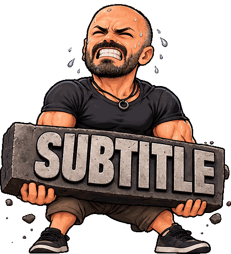

Subtitles made on your computer
Subtitles are written from the speech on your computer, with no upload, in ready-made styles including word-by-word highlight. A video's own subtitles can be reused, each line can be moved on the picture, and the lines can be saved as an .srt file.